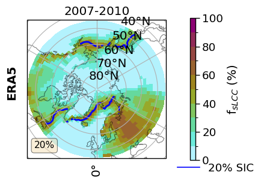
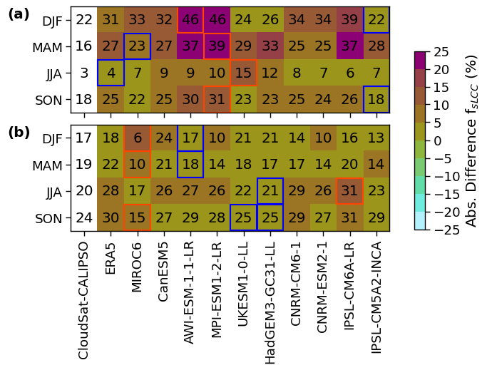
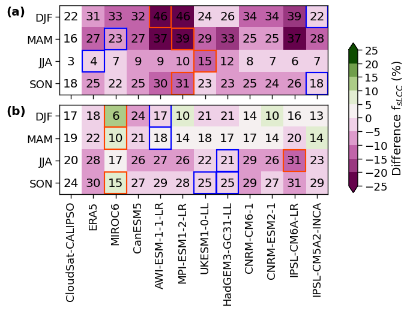
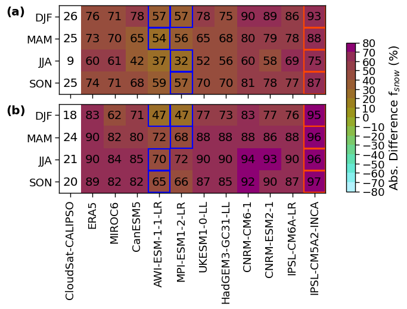
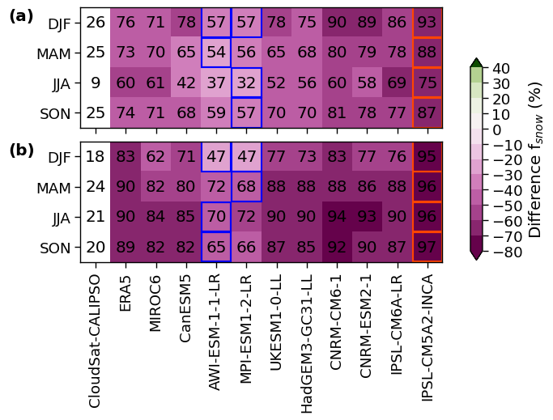
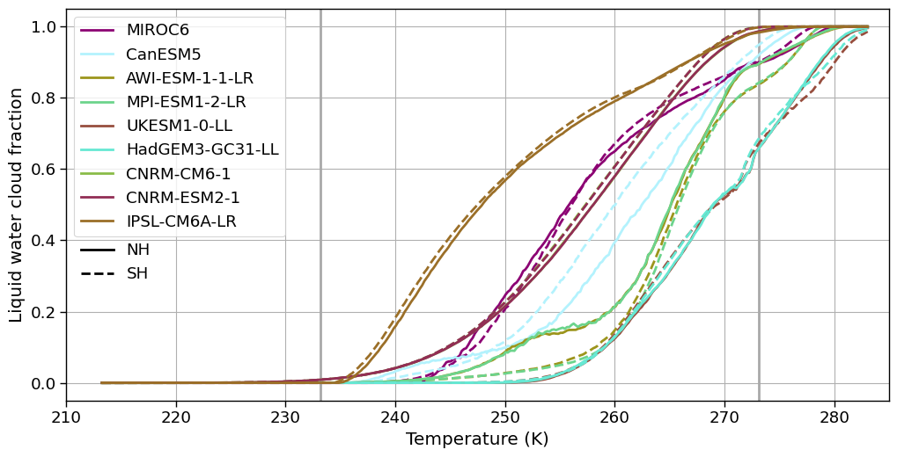
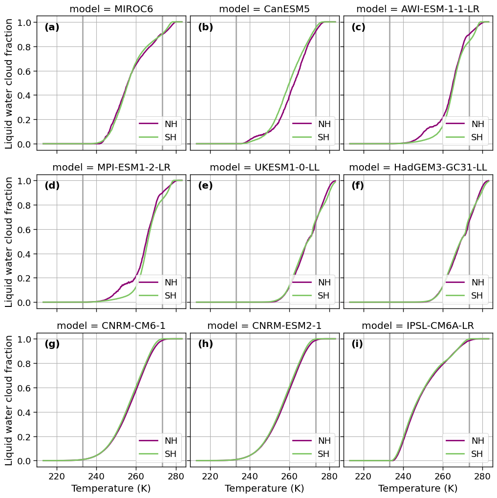

Analysis of CMIP6, ERA5, and CloudSat#
Table of Contents#
1. Introduction #
Questions
How is the cloud phase and snowfall
NOTE: .
2. Data Wrangling #
Organize my data#
Define a prefix for my project (you may need to adjust it for your own usage on your infrastructure).
input folder where all the data used as input to my Jupyter Notebook is stored (and eventually shared)
output folder where all the results to keep are stored
tool folder where all the tools
The ERA5 0.25deg data is located in the folder \scratch\franzihe\, CloudSat at …
import os
import pathlib
import sys
import socket
hostname = socket.gethostname()
abs_path = str(pathlib.Path(hostname).parent.absolute())
WORKDIR = abs_path[:- (len(abs_path.split('/')[-2] + abs_path.split('/')[-1])+1)]
if "mimi" in hostname:
print(hostname)
DATA_DIR = "/mn/vann/franzihe/"
# FIG_DIR = "/uio/kant/geo-geofag-u1/franzihe/Documents/Figures/ERA5/"
FIG_DIR = f"/uio/kant/geo-geofag-u1/franzihe/Documents/Python/globalsnow/CloudSat_ERA5_CMIP6_analysis/Figures/"
elif "glefsekaldt" in hostname:
DATA_DIR = "/home/franzihe/Data/"
FIG_DIR = "/home/franzihe/Documents/Figures/ERA5/"
INPUT_DATA_DIR = os.path.join(DATA_DIR, 'input')
OUTPUT_DATA_DIR = os.path.join(DATA_DIR, 'output')
UTILS_DIR = os.path.join(WORKDIR, 'utils')
FIG_DIR_mci = os.path.join(FIG_DIR, 'McIlhattan/')
sys.path.append(UTILS_DIR)
# make figure directory
try:
os.mkdir(FIG_DIR)
except OSError:
pass
try:
os.mkdir(FIG_DIR_mci)
except OSError:
pass
mimi.uio.no
Import python packages#
Pythonenvironment requirements: file requirements_globalsnow.txtload
pythonpackages from imports.pyload
functionsfrom functions.py
# supress warnings
import warnings
warnings.filterwarnings('ignore') # don't output warnings
# import packages
from imports import(xr, ccrs, cy, plt, glob, cm, fct, np, pd, add_cyclic_point)
# from matplotlib.lines import Line2D
# from matplotlib.patches import Patch
# from sklearn.metrics import r2_score
# plt.rcParams['text.usetex'] = True
from seaborn import set_context
xr.set_options(display_style='html')
<xarray.core.options.set_options at 0x7fb130272ad0>
# reload imports
%load_ext autoreload
%autoreload 2
# plot cosmetics
set_context('paper', font_scale=1.5, rc={"lines.linewidth": 2})
Open variables#
Get the data requried for the analysis.
dat_in = os.path.join(OUTPUT_DATA_DIR, 'CS_ERA5_CMIP6')
# make output data directory
# try:
# os.mkdir(dat_out)
# except OSError:
# pass
sic = xr.open_dataset(os.path.join(INPUT_DATA_DIR, 'AMSR2_sea_ice/40NS/AMSR2_IPSL-CM6A-LR_200701_201012.nc'))
lwp_thresholds = [3, 5, 10, 15,]# 20]
dict_label = {
# 'lcc_wo_snow': {'cb_label':'FsLCC (%)', 'levels':np.arange(0,110,10), 'vmin': 0, 'vmax':100, 'diff_levels':np.arange(-30,35,5), 'diff_vmin':-30, 'diff_vmax':30},
# 'lcc_w_snow': {'cb_label':'FoS in sLCCs (%)', 'levels':np.arange(0,110,10), 'vmin': 0, 'vmax':100, 'diff_levels':np.arange(-60,65,5), 'diff_vmin':-60, 'diff_vmax':60},
# 'sf_eff': {'cb_label':'SE in sLCCs (h$^{-1}$)', 'levels':np.arange(0,5.5,.5), 'vmin':0, 'vmax':5, 'diff_levels':np.arange(-1.2,1.4,.2), 'diff_vmin':-1.2, 'diff_vmax':1.2}#'Relative snowfall efficiency (h$^{-1}$)'
'FLCC' : {'cb_label':'f$_{{LCC}}$ (%)', 'levels':np.arange(0,110.,10.), 'vmin':0, 'vmax': 100., 'vmax2': 100., 'diff_levels':np.arange(-100,110,10), 'diff_vmin':-100, 'diff_vmax':100, 'bounds':np.linspace(-40,40,17), 'qrates': list(np.arange(-42.5, 42.5,5))},
'FsLCC': {'cb_label':'f$_{{sLCC}}$ (%)', 'levels':np.arange(0,110.,10.), 'vmin':0, 'vmax': 100, 'vmax2': 65., 'diff_levels':np.arange(-100,110,10), 'diff_vmin':-100, 'diff_vmax':100, 'bounds':np.linspace(-25,25,11), 'qrates': list(np.arange(-27.5,27.5,5))},
# 'FoP' : {'cb_label':'FoP in LCCs (%)', 'levels':np.arange(0,105.,5.), 'vmin':0, 'vmax': 100, 'diff_levels':np.arange(-100,110,10), 'diff_vmin':-100, 'diff_vmax':100},
'FoS' : {'cb_label':'f$_{{snow}}$ (%)', 'levels':np.arange(0,110.,10.), 'vmin':0, 'vmax': 100, 'vmax2': 100., 'diff_levels':np.arange(-100,110,10), 'diff_vmin':-100, 'diff_vmax':100, 'bounds':np.linspace(-80,80,17), 'qrates':list(np.arange(-85,85,10))},
# 'pr_eff': {'cb_label':'PE in sLCCs (h$^{-1}$)', 'levels':np.arange(0,550.,50.), 'vmin':0, 'vmax':500, 'diff_levels':np.arange(-120,140,20), 'diff_vmin':-120, 'diff_vmax':120},
'FLCC-FsLCC': {'cb_label':'f$_{{LCC}}$ (%), f$_{{sLCC}}$ (%)', 'levels':np.arange(0,110.,10.), 'vmin':0, 'vmax': 100, 'vmax2': 65., 'diff_levels':np.arange(-100,110,10), 'diff_vmin':-100, 'diff_vmax':100, 'bounds':np.linspace(-45,45,19), 'qrates': list(np.arange(-47.5,47.5,5))},
'sf_eff': {'cb_label':'SE in sLCCs (h$^{-1}$)','levels':np.arange(0,5.5,.5), 'vmin':0, 'vmax': 5, 'vmax2': 7.5, 'diff_levels':np.arange(-1.2,1.4,.2), 'diff_vmin':-1.2, 'diff_vmax':1.2, 'bounds':np.linspace(-2,2,21), 'qrates': list(np.arange(-2.1,2.1,0.2))},
# 'sf_eff': {'cb_label':'SE in sLCCs (h$^{-1}$)','levels':np.arange(0,9.5,.5), 'vmin':0, 'vmax': 9, 'diff_levels':np.arange(-1.2,1.4,.2), 'diff_vmin':-1.2, 'diff_vmax':1.2},
}
# Initialize dictionaries to store data and regression results
ratios = {}
regression = {}
# Loop through different LWP thresholds
for lwp_threshold in lwp_thresholds:
# Load data into ratios dictionary
ratios[lwp_threshold] = xr.open_mfdataset(glob(f'{dat_in}/ratios_500/*LWP{lwp_threshold}_*.nc'))
# Initialize a dictionary to store linear regression results
linregress_results = {}
# Perform linear regression for each variable
for var_name in dict_label.keys():
linregress_results[var_name] = fct.get_linear_regression_hemisphere(ratios[lwp_threshold], var_name)
# Concatenate regression results along the 'variable' dimension
regression[lwp_threshold] = xr.concat(objs=list(linregress_results.values()),
dim =list(linregress_results.keys())).rename({"concat_dim":"variable"})
# Reindex the data according to the desired model order
regression[lwp_threshold] = regression[lwp_threshold].reindex({'model':['ERA5', 'MIROC6', 'CanESM5', 'AWI-ESM-1-1-LR',
'MPI-ESM1-2-LR', 'UKESM1-0-LL', 'HadGEM3-GC31-LL', 'CNRM-CM6-1',
'CNRM-ESM2-1', 'IPSL-CM6A-LR', 'IPSL-CM5A2-INCA']})
# Concatenate data and regression results along the 'threshold' dimension
ratios = xr.concat(objs=list(ratios.values()), dim=lwp_thresholds).rename({"concat_dim":"threshold"})
ratios = ratios.reindex(season=['DJF', 'MAM', 'JJA', 'SON'])
regression = xr.concat(objs=list(regression.values()), dim=lwp_thresholds).rename({"concat_dim":"threshold"})
# Initialize dictionaries to store data and regression results
ratios_mci = {}
regression_mci = {}
# Loop through different LWP thresholds
for lwp_threshold in lwp_thresholds:
# Load data into ratios dictionary
ratios_mci[lwp_threshold] = xr.open_mfdataset(glob(f'{dat_in}/ratios_500_mci/*LWP{lwp_threshold}_*.nc'))
# Initialize a dictionary to store linear regression results
linregress_results = {}
# Perform linear regression for each variable
for var_name in dict_label.keys():
linregress_results[var_name] = fct.get_linear_regression_hemisphere(ratios_mci[lwp_threshold], var_name)
# Concatenate regression results along the 'variable' dimension
regression_mci[lwp_threshold] = xr.concat(objs=list(linregress_results.values()),
dim =list(linregress_results.keys())).rename({"concat_dim":"variable"})
# Reindex the data according to the desired model order
regression_mci[lwp_threshold] = regression_mci[lwp_threshold].reindex({'model':['ERA5', 'MIROC6', 'CanESM5', 'AWI-ESM-1-1-LR',
'MPI-ESM1-2-LR', 'UKESM1-0-LL', 'HadGEM3-GC31-LL', 'CNRM-CM6-1',
'CNRM-ESM2-1', 'IPSL-CM6A-LR', 'IPSL-CM5A2-INCA']})
# Concatenate data and regression results along the 'threshold' dimension
ratios_mci = xr.concat(objs=list(ratios_mci.values()), dim=lwp_thresholds).rename({"concat_dim":"threshold"})
ratios_mci = ratios_mci.reindex(season=['ASO', 'NDJ', 'FMA', 'MJJ'])
regression_mci = xr.concat(objs=list(regression_mci.values()), dim=lwp_thresholds).rename({"concat_dim":"threshold"})
# ratios = xr.open_mfdataset(glob(f'{dat_in}/ratios_500/*LWP{lwp_threshold}_*.nc'))
# ratios_mci = xr.open_mfdataset(glob(f'{dat_in}/ratios_500_mci/*LWP{lwp_threshold}_*.nc'))
# # calculate linear regression and create dataset with values
# linregress = dict()
# for var_name in (dict_label.keys()):
# linregress[var_name] = fct.get_linear_regression_hemisphere(ratios.sel(threshold=lwp_threshold), var_name)
# _ds = list(linregress.values())
# _coord = list(linregress.keys())
# regression = xr.concat(objs=_ds, dim=_coord).rename({"concat_dim":"variable"})
# regression = regression.reindex({'model':['ERA5', 'MIROC6', 'CanESM5', 'AWI-ESM-1-1-LR',
# 'MPI-ESM1-2-LR', 'UKESM1-0-LL', 'HadGEM3-GC31-LL', 'CNRM-CM6-1',
# 'CNRM-ESM2-1', 'IPSL-CM6A-LR', 'IPSL-CM5A2-INCA']})
# # calculate linear regression and create dataset with values
# linregress_mci = dict()
# for var_name in (dict_label.keys()):
# linregress_mci[var_name] = fct.get_linear_regression_hemisphere(ratios_mci, var_name)
# _ds = list(linregress_mci.values())
# _coord = list(linregress_mci.keys())
# regression_mci = xr.concat(objs=_ds, dim=_coord).rename({"concat_dim":"variable"})
# regression_mci = regression_mci.reindex({'model':['ERA5', 'MIROC6', 'CanESM5', 'AWI-ESM-1-1-LR',
# 'MPI-ESM1-2-LR', 'UKESM1-0-LL', 'HadGEM3-GC31-LL', 'CNRM-CM6-1',
# 'CNRM-ESM2-1', 'IPSL-CM6A-LR', 'IPSL-CM5A2-INCA']})
# .sel(model = ['MIROC6', 'CanESM5', 'AWI-ESM-1-1-LR',
# 'MPI-ESM1-2-LR', 'UKESM1-0-LL', 'HadGEM3-GC31-LL', 'CNRM-CM6-1',
# 'CNRM-ESM2-1', 'IPSL-CM6A-LR', 'IPSL-CM5A2-INCA'])
hemisphere = 'NH'
lat_extent = 45.
value = ratios.sel(threshold=lwp_threshold)['FsLCC_season'].sel(model='ERA5', season='DJF')
value_sic = sic['z_season_mean'].sel( season='DJF')
hemi_glob = ratios.sel(threshold=lwp_threshold)['FsLCC_season_mean'].sel(model='ERA5', season='DJF')
projection = fct.create_projection(hemisphere)
f, axsm = plt.subplots(nrows=1,
ncols=1,
subplot_kw={'projection': projection},
figsize=[4, 3], sharex=True, sharey=True)
fct.setup_axes(axsm, hemisphere, lat_extent)
cmap = cm.hawaii_r
levels = dict_label['FoS']['levels']
norm = fct.BoundaryNorm(levels, ncolors=cmap.N, clip=False)
axsm.text(-0.07, 0.55, 'ERA5',
va='bottom',
ha='center',
rotation='vertical',
rotation_mode='anchor',
transform=axsm.transAxes,
fontweight='bold')
val = value.sel(lat=slice(45,90)) if hemisphere == 'NH' else value.sel(lat=slice(-90,-45))
cf = axsm.pcolormesh(val.lon, val.lat, (val.where(~np.isnan(val))),
transform=ccrs.PlateCarree(),
cmap=cmap,
norm=norm)
contour = value_sic.plot.contour(ax=axsm, transform=ccrs.PlateCarree(), x='lon', y='lat', levels = [20., ], lw=1.2, add_colorbar=False, colors = 'blue')
fct.add_text_box(axsm, hemi_glob.sel(hemisphere=hemisphere,), 'FoS')
axsm.set_title('2007-2010')
cbaxes = f.add_axes([0.9, 0.1, 0.0225, 0.79])
cb_label = dict_label['FsLCC']['cb_label']
extend = None
plt.colorbar(cf, cax=cbaxes, shrink=0.5,extend=extend, orientation='vertical', label=cb_label)
legend_elements = [fct.Line2D([0], [0], color='b', lw=1.2, label='20% SIC'),
]
leg = axsm.legend(handles=legend_elements, bbox_to_anchor=(1.05, 0.0), loc=2, borderaxespad=0.)#loc='best')
leg.get_frame().set_edgecolor('b')
leg.get_frame().set_linewidth(0.0)
# axsm.clabel(contour, fmt='%1.1f', fontsize=12)# cbar = plt.colorbar(contour, )#cax=axsm, orientation='vertical',pad=0.05, shrink = 0.8)
#cbar.set_label('Sea ice concentration (%)',fontsize=16)
# ratios.sel(threshold=lwp_threshold)['FoS_year'].sel(model='ERA5').plot()

# for var_name in (dict_label.keys()):
for var_name in ['FsLCC', 'FoS',]:# 'FLCC','FLCC-FsLCC','sf_eff', 'FsLCC',]:
# # for lwp_threshold in lwp_thresholds:
for lwp_threshold in [5,]:
# print(f'plot {var_name} for {lwp_threshold}')
F_DIR = os.path.join(FIG_DIR,f'CS_ERA5_CMIP6_{lwp_threshold}/')
F_DIR_mci = os.path.join(FIG_DIR_mci,f'CS_ERA5_CMIP6_{lwp_threshold}/')
try:
os.mkdir(F_DIR)
except OSError:
pass
try:
os.mkdir(F_DIR_mci)
except OSError:
pass
# fct.plt_spatial_season_var(ratios.sel(threshold=lwp_threshold), var_name, dict_label, sic['z_season_mean'], F_DIR, 45, lwp_threshold)
# # # fct.plt_spatial_season_var(ratios_mci.sel(threshold=lwp_threshold), var_name, dict_label, F_DIR_mci, 66, lwp_threshold)
# # plot monthly model variation
# fct.plt_monthly_model_variation(ratios.sel(threshold=lwp_threshold), var_name, dict_label[var_name],F_DIR, lwp_threshold)
# # # # fct.plt_monthly_model_variation(ratios_mci.sel(threshold=lwp_threshold), var_name, dict_label[var_name],F_DIR_mci, lwp_threshold)
# fct.plt_monthly_interannual_variation(ratios.sel(threshold=lwp_threshold), var_name, lwp_threshold, F_DIR, dict_label[var_name])
# # # # fct.plt_monthly_interannual_variation(ratios_mci.sel(threshold=lwp_threshold), var_name, lwp_threshold, F_DIR_mci, dict_label[var_name])
fct.plt_absolute_difference_season(ratios.sel(threshold=lwp_threshold), var_name, lwp_threshold, dict_label[var_name], F_DIR)
fct.plt_difference_season(ratios.sel(threshold=lwp_threshold), var_name, lwp_threshold, dict_label[var_name], F_DIR)
# fct.plt_heatmap_all_models_season(ratios.sel(threshold=lwp_threshold), var_name, lwp_threshold, dict_label[var_name], F_DIR)
# # plot scatter CloudSat vs model
# fct.plt_scatter_obs_model(ratios.sel(threshold=lwp_threshold), regression.sel(threshold=lwp_threshold), var_name, dict_label[var_name], F_DIR, lwp_threshold)
# # # fct.plt_scatter_obs_model(ratios_mci.sel(threshold=lwp_threshold), regression_mci.sel(threshold=lwp_threshold), var_name, dict_label[var_name], F_DIR_mci, lwp_threshold)
# # plot variable for individual model
# fct.plt_spatial_season_all_models(ratios.sel(threshold=lwp_threshold), var_name, dict_label, F_DIR, 45)
# # # # fct.plt_spatial_season_all_models(ratios_mci.sel(threshold=lwp_threshold), var_name, dict_label, F_DIR_mci, 66)
# # plot difference between CloudSat and ERA5, CMIP6 mean for lwp threshold comparison
# if var_name == 'FLCC' or var_name == 'FsLCC' or var_name == 'FoS':
# for hemisphere in ['NH', 'SH']:
# fct.plt_spatial_annual_difference(ratios, hemisphere, var_name, dict_label[var_name], FIG_DIR, 45, lwp_thresholds)
# # fct.plt_spatial_annual_difference(ratios_mci, hemisphere, var_name, dict_label[var_name], F_DIR_mci, 45, lwp_thresholds)
# for lwp_threshold in lwp_thresholds:
# # # plot R2 values for all values and both hemispheres
# F_DIR = os.path.join(FIG_DIR,f'CS_ERA5_CMIP6_{lwp_threshold}/')
# fct.plt_R2_heatmap_season(regression.sel(threshold=lwp_threshold), dict_label, F_DIR, lwp_threshold)
# # # fct.plt_R2_heatmap_season(regression_mci.sel(threshold=lwp_threshold), dict_label, F_DIR_mci, lwp_threshold)




x=ratios['FsLCC'+'_season_cs_mean'].sel(threshold=5, hemisphere='NH', season='DJF')
y=ratios['sf_eff'+'_season_cs_mean'].sel(threshold=5, hemisphere='NH', season='DJF')
xr.plot.scatter(ratios.sel(threshold=5, hemisphere='NH', season='DJF'), x='FsLCC'+'_season_cs_mean', y='sf_eff'+'_season_cs_mean', hue='model', hue_style='discrete', cmap=cm.hawaii)
_in = os.path.join(INPUT_DATA_DIR, 'cmip6_hist/lcf_franz.csv')
da = pd.read_csv(_in)
models = list(da['model'].unique())
len(models)
9
f, axsm = plt.subplots(nrows=1, ncols=1, sharex=True, sharey=True, figsize=[10, 5])
# ax = axsm.flat
# colors = cm.hawaii(range(0, 256, int(256 / len(list(da['model'].unique()))) + 1))
cmap = cm.hawaiiS
# for (i, hemisphere) in enumerate(['north', 'south']):
axsm.axvline(x=273.15, ymin=0, ymax=1, color='darkgrey')
axsm.axvline(x=273.15-40, ymin=0, ymax=1, color='darkgrey')
# axsm.text(0.05, 0.95, f'{fct.fig_label[i]}', fontweight='bold', horizontalalignment='left', verticalalignment='top', transform=axsm.transAxes)
axsm.set_xlim([210, 285])
# for c, model in zip(colors, list(da['model'].unique())):
# da_model = da[da['model'] == model]
# da_model[da['region'] == hemisphere].plot.line(ax=axsm, x='T', y='LCF_0.5', label=model, color=c)
for c, model in zip(plt.cycler('color', cmap.colors), list(da['model'].unique())):
da_model = da[da['model'] == model]
da_model[da['region'] =='north'].plot.line(ax=axsm, x='T', y='LCF_0.5', label=model, color=c['color'])
da_model[da['region'] =='south'].plot.line(ax=axsm, x='T', y='LCF_0.5', label='_', color=c['color'], linestyle = '--')
axsm.set_ylabel('Liquid water cloud fraction')
axsm.set_xlabel('Temperature (K)')
axsm.grid(True)
# Second legend lines
line_solid = fct.Line2D([], [], color='black', linestyle='-', label='NH')
line_dashed = fct.Line2D([], [], color='black', linestyle='--', label='SH')
h, l = axsm.get_legend_handles_labels()
first_legend = axsm.legend(handles=h, loc=0)
ax = plt.gca().add_artist(first_legend)
second_legend = plt.legend(handles=[line_solid, line_dashed], loc=0, bbox_to_anchor=(-0.38, 0.05, 0.5, 0.39))
second_legend.set_frame_on(False)
plt.tight_layout(pad=0., w_pad=0., h_pad=0.) ;
figname = f'T_vs_LCF_NH_SH.png'
plt.savefig(FIG_DIR + figname, format='png', bbox_inches='tight', transparent=True)

f, axsm = plt.subplots(nrows=3, ncols=3, sharex=True, sharey=True, figsize=[10, 10])
colors = cm.hawaii(range(0, 256, int(256/3)+1))
for ax, model, k in zip(axsm.flatten(), list(da['model'].unique()), range(len(fct.fig_label))):
ax.text(0.05, 0.95, f'{fct.fig_label[k]}', fontweight='bold', horizontalalignment='left', verticalalignment='top', transform=ax.transAxes)
ax.axvline(x=273.15, ymin=0, ymax=1, color='darkgrey')
ax.axvline(x=273.15-40, ymin=0, ymax=1, color='darkgrey')
ax.set_xlim([210, 285])
ax.set_title(f'model = {model}')
da_model = da[da['model'] == model]
da_model[da['region'] =='north'].plot.line(ax=ax, x='T', y='LCF_0.5', label='NH', color=colors[0])
da_model[da['region'] =='south'].plot.line(ax=ax, x='T', y='LCF_0.5', label='SH', color=colors[2] )
ax.set_ylabel('Liquid water cloud fraction')
ax.set_xlabel('Temperature (K)')
ax.grid(True)
ax.legend(loc=4)
plt.tight_layout(pad=0, w_pad=0., h_pad=1) ;
figname = f'T_vs_LCF_models_seperate.png'
plt.savefig(FIG_DIR + figname, format='png', bbox_inches='tight', transparent=True)

# file_pattern = f'{DATA_DIR}/output/CS_ERA5_CMIP6/orig/cloudsat_500_orig*.nc'
# files = sorted(glob(file_pattern))
# weights= xr.open_mfdataset(files)['areacella']
# weights
# dataset = ratios.sel(threshold=5)
# di = dataset[var_name+'_season'] - dataset[var_name+'_season'].sel(model='CloudSat')
# di_2 = np.sqrt(di)
# # di_2_mean = di_2.mean()
# lat_slice = slice(45,90)
# di_2_mean, _, _ = fct.calculate_stats(di_2, weights, lat_slice)
# # dataset[var_name+'_season_cs']
# np.sqrt(di_2_mean)
# for var_name in ['FoS',]:# 'sf_eff', 'FLCC','FLCC-FsLCC','FsLCC',:
# # plot variable for individual model
# fct.plt_spatial_season_all_models(ratios, var_name, dict_label, FIG_DIR, 45)
# fct.plt_spatial_season_all_models(ratios_mci, var_name, dict_label, FIG_DIR_mci, 66)